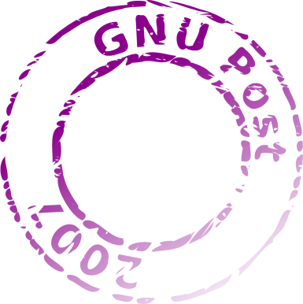

GNU Post images
Here are some nice snail mail images by Tomasz W. Kozłowski.
Alternative GNU stamp
(SVG)

FSF Airmail
(SVG)

GNU Emacs stamp
(SVG)

Free as in “freedom”
(SVG)
GNU Hurd stamp
(SVG)

GNU Post 2007
(SVG)

GNU stamp
(SVG)

GPLv3 stamp
(SVG)
GNU postcard
(larger, SVG)

GNU postcard (back)
(larger, SVG)

Copyright information
- Alternative GNU stamp — available under the same license as
the Alternative GNU
Head
- FSF Airmail — based on the official Free Software
Foundation logo created by Li Jiang and available under the GNU
General Public License; either version 2, or any later version
- GNU Emacs stamp — the original GNU Emacs logo was created
by Luis Fernandes and vectorised by Dmitry Dzhus. The vector
version of the logo is released under the terms of the GNU General
Public License; either version 2 or any later version
- Free as in “freedom” — based on the official
GNU Head logo originally created by Etienne Suvasa and re-drawn by
Peter Garwinski; available under the GNU General Public License
- GNU Hurd stamp — based on the original Hurd Metafont Logo
designed by Stephen McCamant and available under the same
license
- GNU Post — created from scratch by Tomasz
W. Kozłowski; the image is in the public domain
- GNU stamp — GNU General Public License
- GPLv3 stamp — based on the original FSF GPLv3 button and
available under the same terms
- GNU postcard — based on the vector version of “The
Dynamic Duo: The Gnu and the Penguin in flight” image,
originally created by Victor Siame and released under the Free Art
License
- GNU postcard (back) — created by Tomasz; the elements are
trivial and it falls in the public domain, but because it embeds the
GNU Emacs image under GPL it is distributed as a whole under the GNU
General Public License, either version 2 or any later version
{kind=link}
{kind=link}
{kind=link}
{kind=link}
{kind=link}
{kind=link}
{kind=link}
{kind=link}
{kind=link}
{kind=link}
{kind=link}
{kind=link}
{kind=link}
{kind=link}
{kind=link}